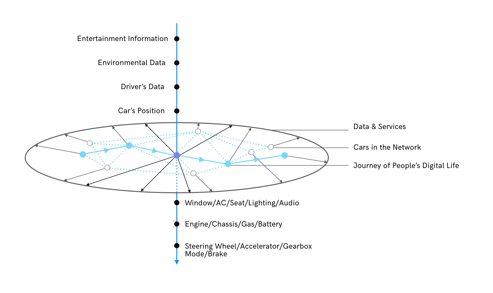
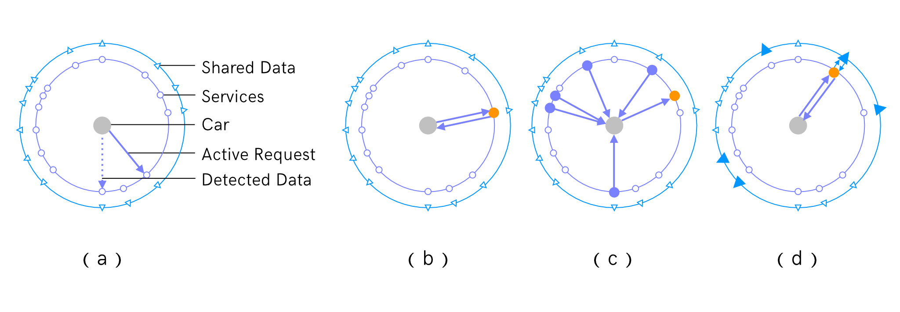
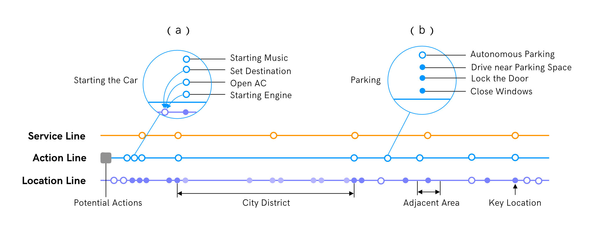
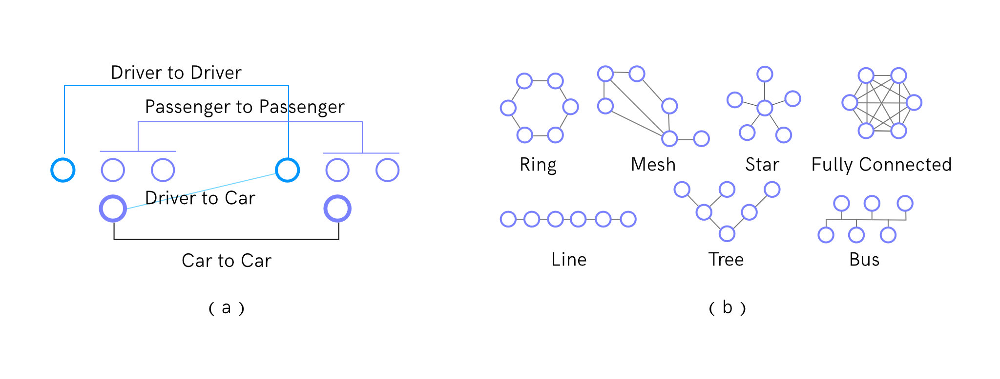

Connected and Open Platform-based Approaches for Smart Car Service Design
2016-2-25, included in the HCI International 2016 Conference Proceedings
Xiaohua Sun, Tong Li, Feng Zexi
Abstract
Smart Car Services refer to a rich variety of services for drivers or passengers that are brought to people in recent years through mobile Internet, car-to-car network, IOT, big data, and other technologies. Because of their relationship with cutting-edge technology, most of them are original by nature, and there lacks clear approaches for the design of this type of services. Based on the study of existing services and our own design practices, we propose in this paper two general approaches that together covers the majority of the space of smart car service innovation. We further proposed three perspectives to look at smart car services along with corresponding design methods for each of them. We also exemplify in detail the approaches and methods using our own design cases.
Introduction
With the development of digital technology, cars are acquiring more and more functionalities of mobile electronic devices rather than only as a tool for transportation. More and more services can now be developed to bring convenience to people’s driving or riding of cars. We call in this paper this type of services brought to us by new technologies as smart car services. Currently, most of the efforts in smart car service design are either falling into individual application directions, such as car rental [3,8,10], or focused on the utilization of a specific technology, such as OBD [1,4,9]. There lacks an overall framework to help designers envision varieties of innovative services. We thus propose in this paper the Connected and Open Platform-Based approaches, which together construct a 3D coordinates for exploring different possibilities in smart car service innovation. We will introduce in detail in the following sessions: 1) the 3D framework formed by the two approaches, 2) three perspectives to interpret the concept of Connected, and 3) how each of them could be further augmented through opening up the data and control accessibility of a car to different services. We also use three of our design cases as examples to show how these approaches and associated methods could help with the initiation of new services.
Connected and Open Platform-Based Approaches
People, Car, and Environment are three key components for constructing car services. For smart car service, the People component can be further expanded to people’s digital life, and the Environment component can include not only the physical but also the digital environment encompassing people and cars. While delineating new car services, one could think from the direction of linking cars with each other, linking cars with people’s digital life, and linking cars with rich services and data available in the digital environment. As illustrated in Fig.1, this approach of connecting the key components with each other helps to form a plane that could cover all the potential relationships. On the other hand, for a specific car in the network, there are data at different levels of availability for the plane of service (e.g. entertainment information, environmental data, driver data, car position, interior and ambient setting, vehicle status, driving control, etc.). This could thus form another dimension perpendicular to the service plane and suggest potential features based on the property of data at different levels in sensing and controlling a car. Together, these two dimensions cover an innovation space with both the broadness of linking a car to all other types of components and the depth of sensing and controlling a car at different levels.
We here define those three types of linking a car to other components as the “Connected” approach and will explain in detail the characteristics and design methods of each type. For accessing the data and control of a car, it is normally through the “Open Platform-Based” approach, in which car companies develop an open platform through which third-party applications can sense and control a car to certain level. We will explain in later session how this possibility of in-depth accessing of a car can augment the possibilities brought by the “Connected” approach.
Fig. 1. The Connected and Open Platform-based Approaches
Three Perspectives for Interpreting the “Connected” Concept
The three ways of linking a car to other components in smart car service construction are indeed three perspectives for interpreting the same trend of connecting. There are thus overlaps in service features designed through each of them. However, they each bring to us a unique entry point to tackle the same problem. A set of methods can also be derived out corresponding to the characteristics of each of them.
Service Circle
When thinking from the angle of connecting a car to services and data available in the digital environment, one could resort to a circular structure (as shown in Fig.2) with the car residing in the center and surrounded by the circles of services and shared data. The construction process could start from the car, either as an active request for service sent from the driver/passenger or as trigger for certain services based on information of the car or the driver detected by the system. When the request or trigger hit the circle of services, there could be one service respond to it (Fig. 2(b)), or multiple related services respond in synergy (Fig. 2(c)). It is also possible that one service would resort to data shared by other services and return to the user a more comprehensive and customized service feature.
Fig. 2. The Service Circle
While designing through this process, it is important to go over all the possible requests or triggers that could be sent or detected from the car, and then link them with as many services and shared data on the circles as possible. After the driver or passenger receives the feedback, this procedure could be repeated for requests or triggers in the next steps. For example, when the driver or passenger in a car sends out the request to look for a restaurant for lunch, we can connect it with one or multiple on-line restaurant recommendation platforms, which could provide recommendations based on the car’s location and the driver’s former preferences. They can also resort to allergic information and dietary suggestion of the user shared by health-related platforms. After the restaurant is decided from the user side, this information would further trigger more services such as restaurant reservation, parking reservation, and recommendations for shopping in the adjacent areas.
Service Line
With its ever increasing level of smartness, the car is no longer only a driving tool for people, but is becoming a more and more important element in people’s digital life. People may set the destination and turn on the AC of a car while at home, and may be advised to adjust their route based on activities in their to-do-list. It is also possible to have the AC at home turned on from the car on the driver’s way back home.
In order to help better sort out the service potentials in this context of digital life, we propose to use a Service Line structure as coordinate to locate service features. As shown in Fig. 3., the structure includes a Service Line, an Action Line, and a Location Line. Since it is about people’s digital life, the design process starts from defining the customer journey map by scenario, such as daily activities during weekdays or activities before, during and after traveling. For example, the journey map for daily activities may include getting up, going to work, grabbing lunch and stopping by the grocery store after work, etc. All the actions are then plotted on the Action Line by time. Considering of the fact that cars are directly associated with journey in the physical world, for the design of car services, a sequence of locations corresponding to the actions are further derived out and plotted on the Location Line (Those at which people is in the car are plotted as filled dots and those at which people is not with the car are plotted as circles). This Location Line is then used as coordinate for the identification of service features. Besides designing services by directly associating with a key location (such as home, office, restaurant, etc.), one could also consider the adjacent area of a key location (such as the surrounding area of a shopping mall) and derive related services (such as parking space reservation) when driving near the destination. It is also possible to identify on the Location Line city districts passed through which have rich service potentials (such as commercial districts) and define information push type of services that are not initiated from the user action.
Fig. 3. The Service Line
Besides actions that could be plotted on the Action Line, there are also actions just put on a to-do-list by the user. Those are considered as potential actions that don’t have specific locations to associate with. When deriving service features, these potential actions could be brought up at each location to see whether and how they could be associated with the location under consideration. For example, if the user has added the action of purchasing milk to his/her to-do-list, we may add to the service the function of reminding the user of the milk-purchasing task when he/she gets to a location with a grocery store in the adjacent area.
Service Network
Connecting cars with each other is similar to the process of forming a social network among them. We could thus carry out service design in this direction from in-depth study of nodes on the network and from thorough analysis of relationships that could be formed among them.
For the design of services, the node of a car could be looked at as a car by itself, or from the point of view of the driver or passengers in the car. Further study could be carried out over the information a car could provide and receive, the needs and behavior of the driver and passengers, etc. This information can then serve as the starting point for the construction of the service network. As shown in Fig.4(a) connections could be formed between cars, drivers, passengers, and even between a car and the driver or passengers in another car. Designers could take social relationship (such as sharing, collaborating, game playing, etc.) for reference when coming up with possible types of relations to form the network. For example, cars could share sensorial data with each other for driving assistant purpose, they could also collaboratively collect, report, and form maps of road condition, traffic condition, etc. Drivers could share entertainment materials, sceneries, and traffic information with each other, they could seek help in the network when there are emergencies, they could also form a temporary chatting group with near cars when there is a heavy traffic jam. For passengers or even drivers, multi-player game, especially those associated with traveling environment or driving history, could be envisioned to make the driving experience more engaging. Designers could also take the social norms concept and apply it to the “society” of cars. For example, the car of a driver with bad driving behavior record may send out alert messages to nearby cars (for ADAS or autonomous driving) or drivers.
Fig. 4. Service Network (mark the relationship)
Besides taking social network for reference semantically, during the construction of the network, the seven main topologies for computer networks (Fig. 4(b)) could also be taken as syntactic reference. They can help the designers to get a clear understanding of the characteristics of each type of topology and organize the network more systematically.
Augmenting the Service through “Open Platform”
Encouraging and supporting users or third party developers to participate in the design and development of applications satisfying people’s everyday needs for car services is a meaningful direction to go in order to bring to car applications the same level of richness as mobile apps. Many car companies build their Open Platform to support users to develop applications using the platform API and sense/control cars of their brand through the Open Platform. There are also public platforms, such as OpenXC [7] and CARGO [2], aiming at achieving the Apple Store effect in an even bigger scope. By installing their products, they enable users and developers to monitor data collected through on-board sensors and to develop applications through their platforms. Of course, for public platforms, to unlock hardware data, support and participation from automakers is very important. There are already platforms focusing on facilitating such collaborations. The Open Automotive Alliance (OAA)[5] comprised of leading automakers and technology companies has the aim of creating in collaboration opportunities for developers to deliver a more safe, intuitive, and seamless driving experience to users. OpenCar [6] offers API, toolset, and simulator for automakers, system integrators, and software developers to build apps on a uniformed platform.
Both the efforts by car manufactures and that by public platforms help to make vehicle data accessible for third-party developers and enable the delivery of services that would not be possible previously. People are now able to control car window, air conditioner, lighting, audio system, and even car engine remotely. It is also possible to intervening a car’s speed and direction under different service conditions. For services designed through the three types of “Connected” approaches introduced in the above session, this Open Platform-Based approach could help to expand or augment them to a broader scope and to a deeper level.
While designing through the Service Circle approach, from one side, there are more types of data could be detected from the car, from the other side, the services we linked to on the circle are now empowered with the capability to control the car. They can now provide to the car functions not only in the form of information but also as actions taken over the car. For example, designers can now envision the function of linking the recent health data of a driver with the sensorial data of his/her current condition in the car and alert the driver, surrounding passengers, and even the health service providers when there are serious health conditions detected. The service can even stop the car remotely if necessary.
When working with the Service Line structure, what was considered as one action previously is now able to be split into multiple segments. Some of them, such as the parking part in Fig. 3(b), can be conducted autonomously and others still under the drivers’ control if they wish. Also, after splitting a combo action into small segments, they can be linked to different points on the Location Line. As shown in Fig. 3(a), setting the destination, starting the AC, starting the engine, these three actions which are previously part of the action of starting a car, are now able to take place when people are still in their house.
For the Service Network of cars, when more data of a car are made available, the communication among them could reach a deeper level. Services previously made up of car-to-car information sharing can also be expanded to include emergency alert or other functions based on vehicle status data.
Design Cases
In a service system design project for recreational vehicles (RV), we followed the approaches and methods introduced above explicitly, and achieved a system with functions of rich varieties and covering many dimensions. For recreational vehicles that are supporting people’s touring, the perspective of linking a car to useful services and data is an important direction to go. During the construction of the system, we first integrated Ma Feng Wo, a web platform for touring, to let users benefit from all the touring services it provides (touristic attractions, travel guide, travel program, hotels, ticket booking, tourism product) in one stop. We also bring to users information and services unique for traveling by recreational vehicles, such as information about the camping site, supply station, and rescue team, and services for customized navigation, themed route planning, route recommendation, RV community platform, and even RV radio station.
The perspective of linking cars with cars from their potential relationships also played an important role in helping us constructing the social community and especially the fleet touring part of the system. Users could form teams before departure through online platforms. One RV could also join a fleet close by on their way of heading towards the same destination. Different vehicles in a fleet can choose to play different roles in a team collaboration, e.g. head vehicle, tail vehicle, vehicle responsible to repairing, and vehicle providing nursing service. The head vehicle can share with others road conditions or front view of the sceneries. The system could support mutual chatting among all the vehicles in the fleet and support passengers from different vehicles to play games together with each other.
The Open Platform-Based approach also inspired us to introduce to the system a set of functions supporting the top-down management of all the vehicles belong to the platform. For example, the system could monitor hardware conditions of the vehicles, remind the driver timely when there is any abnormal vehicle status detected, and contact the nearest repairing and rescue site correspondingly. The system could also stop the vehicle when they are detected getting close to dangerous zones or getting too far away from the route they are suppose to take according to the rental contract.
Different from the top-down utilization of Open Platform in the example above, we experimented in another project the approach of assisting end users to make the most out of this mechanism. We developed an App using the API provided by the Open Platform of PSA to allow users to add IFTTT type of customized scenarios, e.g. turning the air conditioner on when the temperature in the car is above 25 degree, turning on the heater when temperature in the car is below 18 degree, switch the mode of ambient light, music, and fragrance according to the weather outside and the time of the day, etc.
The perspective of connecting the car with one’s daily activities also inspired us in inventing another smart service providing scenario-based automatic setting adjustment. After the user synchronizes his/her personal schedule into the system, a sequence of scenario key points will be generated along with appropriate settings of air conditioning, music, lighting etc. according to the user’s previous preference. All the settings will be executed over the journey to provide the user with a considering experience with smooth transitions.
Conclusions
We propose in this paper the connected and open platform-based approaches in the design of smart service for cars. Hope the analysis of the smart car services from the three main perspectives and their corresponding methods of design could be helpful for the invention of more innovative services. With the development of the technology, there will be more tools help to connect a car with other cars and with diverse data and services. More possibilities may also emerge in opening the data and control accessibility of a car to third-party applications, especially in the stage of autonomous or half-autonomous driving. However, the Open aspect would worth further research regarding driving safety, data security and many other issues. We will set this as the subject to focus on as the next step, studying the level to which people would like to open the data of their cars, under what conditions, and with what kind of expectation for return. This could help delineate the balance line in inventing open platform-based services.
References
- Al-Taee, Majid A., Omar B. Khader, and Nabeel A. Al-Saber. "Remote monitoring of vehicle diagnostics and location using a smart box with Global Positioning System and General Packet Radio Service." Computer Systems and Applications, 2007. AICCSA'07. IEEE/ACS International Conference on. IEEE, 2007.
- Cargo, http://www.cargo.ai.
- Ekiz, Erdogan H., and Ali Bavik. "Scale development process: service quality in car rental services." Electronic Journal of Business Research Methods 6.2 (2008): 133-145.
- Kim, Minyoung, Jae-Hyun Nam, and Jong-Wook Jang. "Implementation of smart car infotainment system including black box and self-diagnosis function." Int. J. Softw. Eng. Appl 18 (2014): 267-274.
- Open Automotive Alliance (OAA), http://www.openautoalliance.net.
- OpenCar, http://www.opencar.com/about-us/.
- OpenXC, http://openxcplatform.com.
- Pachon, Julian, Eleftherios Iakovou, and Ip Chi. "Vehicle fleet planning in the car rental industry." Journal of Revenue and Pricing Management 5.3 (2006): 221-236.
- Siegel, J., et al. "Vehicular engine oil service life characterization using On-Board Diagnostic (OBD) sensor data." SENSORS, 2014 IEEE. IEEE, 2014.
- 1. Yang, Yazao, Wenzhou Jin, and Xiaoni Hao. "Car rental logistics problem: A review of literature." Service Operations and Logistics, and Informatics, 2008. IEEE/SOLI 2008. IEEE International Conference on. Vol. 2. IEEE, 2008.